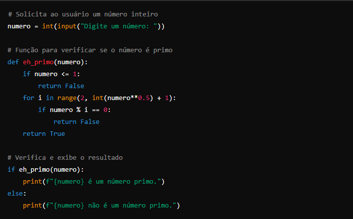
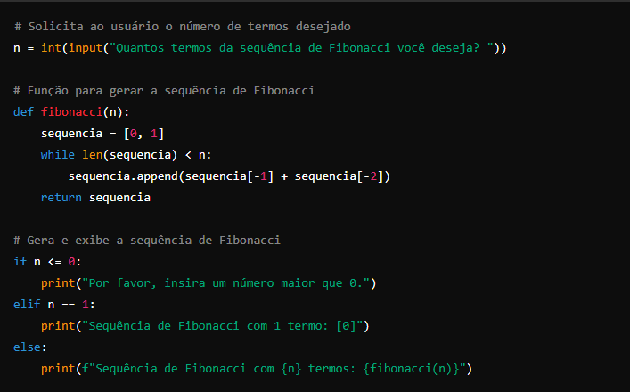
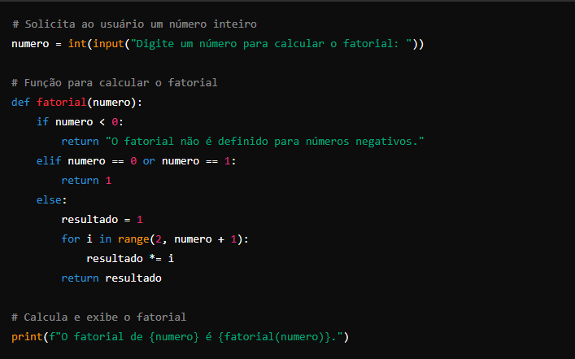

Programas Básicos em Python: Primo, Fatorial e Fibonacci
PRIMO

Como funciona:
Entrada: O programa solicita ao usuário um número inteiro.
Verificação: A função eh_primo() verifica se o número é primo:
Números menores ou iguais a 1 não são primos.
O loop testa divisões do número por valores de 2 até a raiz quadrada do número, tornando o algoritmo mais eficiente.
Resultado: O programa informa se o número é primo ou não.
FIBONACCI

Como funciona:
Entrada: O programa solicita ao usuário o número de termos desejado.
Geração da sequência: A função fibonacci() cria a sequência de Fibonacci:
Inicia com [0, 1] e continua somando os dois últimos termos para gerar o próximo.
Exibição do resultado: O programa mostra a sequência gerada, considerando condições especiais para entradas como 0 ou 1.
A sequência de Fibonacci começa com 0 e 1, e cada termo subsequente é a soma dos dois termos anteriores.
FATORIAL

Como funciona:
Entrada: O programa solicita ao usuário um número inteiro.
Cálculo do fatorial: A função fatorial() calcula o fatorial do número:
Fatoriais não são definidos para números negativos.
O fatorial de 0 ou 1 é 1.
Para números maiores que 1, a função usa um loop multiplicando todos os números de 2 até o número dado.
Exibição do resultado: O programa exibe o fatorial do número.